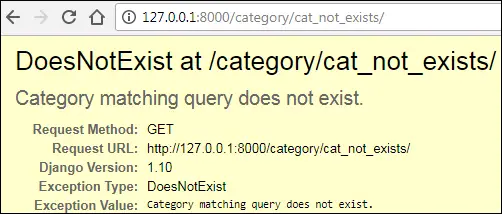
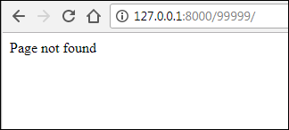
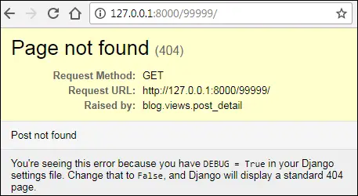
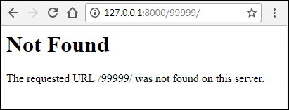
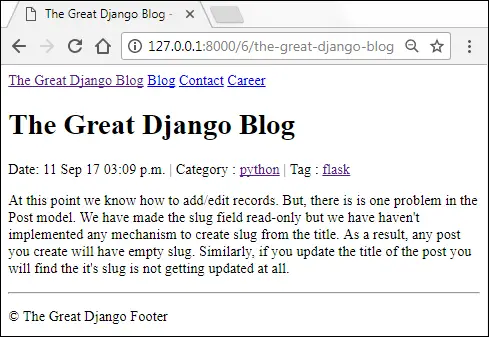

Showing 404 errors In Django
Last updated on July 27, 2020
Visit a category page which doesn't exist for example, http://127.0.0.1:8000/category/cat_not_exists/. You should see DoesNotExist exception like this:

As there is no such category in the database the URL http://127.0.0.1:8000/blog/category/cat_not_exists/ is completely invalid. In production (i.e when DEBUG=True), instead of throwing a DoesNotExist exception Django will show 500 Internal Server Error.
From the point of view of Search Engine Optimization (SEO), it would be much better to show an HTTP 404 error for the non-existent page instead of showing Internal Server Error or DoesNotExist exception.
The same problem exists in the tag page and the post detail page. Visit any tag or post detail page which doesn't exist like http://127.0.0.1:8000/tag/tag_not_exists/ or http://127.0.0.1:8000/97712/ and see it yourself.
Showing an HTTP 404 page #
Django provides two ways to show 404 error.
HttpResponseNotFoundclassHttp404exception
Let's start with HttpResponseNotFound class.
HttpResponseNotFound class #
The HttpResponseNotFound class is an extension of HttpResponse class. It works just like HttpResponse but instead of returning a 200 status code , it returns 404 (which means page not found). To see how it works, open views.py and modify the post_detail() view as follows:
TGDB/django_project/blog/views.py
1 2 3 4 5 6 7 8 9 10 11 12 13 | from django.http import HttpResponse, HttpResponseNotFound
#...
# view function to display a single post
def post_detail(request, pk):
try:
post = Post.objects.get(pk=pk)
except Post.DoesNotExist:
return HttpResponseNotFound("Page not found")
return render(request, 'blog/post_detail.html', {'post': post})
#...
|
Here we are wrapping the code which might throw an exception in the try and except block. Now, If get() method throws a DoesNotExist exception then instead of displaying an error page, Django will show a 404 error page with "Page not found" response. Save the changes and visit http://127.0.0.1:8000/99999/, you should get a response like this:

Http404 exception #
Another way to show a 404 error page is to raise Http404 exception. Notice that unlike HttpResponseNotFound class, Http404 is an exception. Http404 uses a default 404 page which Django provides. To use it just raise Http404 exception in your code like this:
raise Http404
You can also provide an error message while raising Http404 exception.
raise Http404("Some error message")
Open views.py file and amend post_detail() view as follows:
TGDB/django_project/blog/views.py
1 2 3 4 5 6 7 8 9 10 11 12 13 | from django.http import HttpResponse, HttpResponseNotFound, Http404
#...
# view function to display a single post
def post_detail(request, pk):
try:
post = Post.objects.get(pk=pk)
except Post.DoesNotExist:
raise Http404("Post not found")
return render(request, 'blog/post_detail.html', {'post': post})
#...
|
Save the file and visit http://127.0.0.1:8000/blog/99999/, you will see the following 404 error page.

We are currently in development mode. In production (i.e when DEBUG=False) Django will show 404 page which looks like this:

The get_object_or_404() method #
Most of the time our views function goes like this:
- Code try and except block.
- Query the database in the try block.
- If an exception is thrown, catch the exception in the except block and show a 404 page.
This pattern is so common that Django a provides a shortcurt method called get_object_or_404(). Here is the syntax of get_object_or_404().
Syntax: get_object_or_404(klass, **kwargs)
The klass can be a model, a manager or a Queryset object.
The **kwargs represents all keyword arguments as well as lookup parameters that we have been using with the get() and filter() method.
On success, it returns a single object of the given model, if it can't find any records then it raises a Http404 exception.
Internally this method calls get() method of objects manager, so you must always use this method to get a single record.
To use get_object_or_404() first import it from django.shortcuts using the following code.
from django.shortcuts import get_object_or_404
The following examples shows how to use get_object_or_404() method with models, queryset and managers. It also shows that when a matching record is not found, get_object_or_404() raises a Http404 exception.
Example 1: where klass is model
1 2 3 4 5 6 7 8 9 10 11 12 13 14 15 | >>>
>>> from django.shortcuts import get_object_or_404
>>> from blog.models import Category, Post, Tag, Author
>>> post = get_object_or_404(Post, pk=1)
>>>
>>> post
<Post: Post 1>
>>>
>>>
>>> post = get_object_or_404(Post, pk=990)
Traceback (most recent call last):
...
django.http.response.Http404: No Post matches the given query.
>>>
>>>
|
The above code is equivalent to:
1 2 3 4 5 6 7 | >>>
>>> try:
... post = Post.objects.get(pk=1)
... except Post.DoesNotExist:
... raise Http404("Post not found")
...
>>>
|
Example 2: where klass is queryset
1 2 3 4 5 6 7 8 9 | >>>
>>> queryset = Post.objects.filter(title__contains="Post 1")
>>> queryset
<QuerySet [<Post: Post 1>]>
>>>
>>> post = get_object_or_404(queryset, pk=1)
>>>
>>> post
<Post: Post 1>
|
1 2 3 4 5 6 7 8 9 10 | >>>
>>>
>>> post = get_object_or_404(queryset, pk=10) # get_object_or_404() will now raise an exception
Traceback (most recent call last):
...
raise Http404('No %s matches the given query.' % queryset.model._meta.object
_name)
django.http.response.Http404: No Post matches the given query.
>>>
>>>
|
Example 3: where klass is manager
1 2 3 4 | >>>
>>> c = Category.objects.get(name='java')
>>> c
<Category: java>
|
1 2 3 4 5 6 7 8 9 10 11 12 13 14 | >>>
>>> post = get_object_or_404(c.post_set, title__contains="Post 2")
>>>
>>> post
<Post: Post 2>
>>>
>>>
>>> post = get_object_or_404(c.post_set, title__contains="tagged")
Traceback (most recent call last):
...
raise Http404('No %s matches the given query.' % queryset.model._meta.object_name)
django.http.response.Http404: No Post matches the given query.
>>>
>>>
|
Let's update our post_detail() view to use get_object_or_404() method.
TGDB/django_project/blog/views.py
1 2 3 4 5 6 7 8 9 | #...
from django.shortcuts import render, get_object_or_404
#...
# view function to display a single post
def post_detail(request, pk):
post = get_object_or_404(Post, pk=pk)
return render(request, 'blog/post_detail.html', {'post': post})
#...
|
The get_list_or_404() method #
The get_list_or_404() works just like get_object_or_404() method, but instead of returning a single result, it returns a queryset object. If no matching results found, it raises a Http404 exception.
Open views.py file and update post_by_category() and post_by_tag() view functions to use get_list_or_404() method as follows:
TGDB/django_project/blog/views.py
1 2 3 4 5 6 7 8 9 10 11 12 13 14 15 16 17 18 19 20 21 22 23 24 25 | #...
from django.shortcuts import render, get_object_or_404, get_list_or_404
#...
# view function to display post by category
def post_by_category(request, category_slug):
category = get_object_or_404(Category, slug=category_slug)
posts = get_list_or_404(Post, category=category)
context = {
'category': category,
'posts': posts
}
return render(request, 'blog/post_by_category.html', context)
# view function to display post by tag
def post_by_tag(request, tag_slug):
tag = get_object_or_404(Tag, slug=tag_slug)
posts = get_list_or_404(Post, tags=tag)
context = {
'tag': tag,
'posts': posts,
}
return render(request, 'blog/post_by_tag.html', context )
|
After updating views, visit any non-existent category page, tag page or post detail page, you should get a proper HTTP 404 error.
Creating SEO friendly URLs #
As the situation stands, our post detail page URLs looks like http://127.0.0.1:8000/6/. Although it is working fine, the problem is that by looking at the URL nobody can tell what the post is about. It would be good to create URLs which describes something about the post.
For our blog, we will create a URL pattern like the following:
http://example.com/post-pk/post-slug
Let's implement this URL pattern.
Open urls.py in the blog app and amend post_detail URL pattern as follows:
TGDB/django_project/blog/urls.py
1 2 3 4 5 6 7 8 | #...
urlpatterns = [
url(r'^category/(?P<category_slug>[\w-]+)/$', views.post_by_category, name='post_by_category'),
url(r'^tag/(?P<tag_slug>[\w-]+)/$', views.post_by_tag, name='post_by_tag'),
url(r'^(?P<pk>\d+)/(?P<post_slug>[\w\d-]+)$', views.post_detail, name='post_detail'),
url(r'^$', views.post_list, name='post_list'),
]
|
Update post_detail() view function to accept another parameter called post_slug as follows:
TGDB/django_project/blog/views.py
1 2 3 4 5 6 7 8 | #...
# view function to display a single post
def post_detail(request, pk, post_slug):
post = get_object_or_404(Post, pk=pk)
return render(request, 'blog/post_detail.html', {'post': post})
#...
|
At last, we need to modify the get_absolute_url() method of the Post model. Open models.py and update get_absolute_url() method of Post model as follows:
TGDB/django_project/blog/models.py
1 2 3 4 5 6 | #...
class Post(models.Model):
#...
def get_absolute_url(self):
return reverse('post_detail', args=[self.id, self.slug])
#...
|
As we are using get_absolute_url() method to generate links to post detail page in our templates, we don't need to modify anything else. All templates will pick the changes automatically.
To view the updated URL visit http://127.0.0.1:8000/ and click on any post detail page.

Listing posts in reverse chronological order #
Currently, all pages of our site display posts in the order in which they are inserted into the database. For usability purpose, it would be much better to display posts in reverse chronological order i.e latest first, oldest last.
This change would be very simple. Open views.py in the blog app and update post_list(), post_by_category() and post_by_tag() views as follows:
TGDB/django_project/blog/views.py
1 2 3 4 5 6 7 8 9 10 11 12 13 14 15 16 17 18 19 20 21 22 23 24 25 26 27 28 29 30 31 32 33 34 | #...
# view function to display a list of posts
def post_list(request):
posts = Post.objects.order_by("-id").all()
return render(request, 'blog/post_list.html', {'posts': posts})
# view function to display a single post
def post_detail(request, pk, post_slug):
post = get_object_or_404(Post, pk=pk)
return render(request, 'blog/post_detail.html', {'post': post})
# view function to display post by category
def post_by_category(request, category):
category = get_object_or_404(Category, slug=category_slug)
posts = get_list_or_404(Post.objects.order_by("-id"), category=category)
context = {
'category': category,
'posts': posts
}
return render(request, 'blog/post_by_category.html', context)
# view function to display post by tag
def post_by_tag(request, tag):
tag = get_object_or_404(Tag, slug=tag_slug)
posts = get_list_or_404(Post.objects.order_by("-id"), tags=tag)
context = {
'tag': tag,
'posts': posts
}
return render(request, 'blog/post_by_tag.html', context )
|
From now on, all the pages of our blog will display posts in reverse chronological order.
Note: To checkout this version of the repository type git checkout 18a.
Load Comments